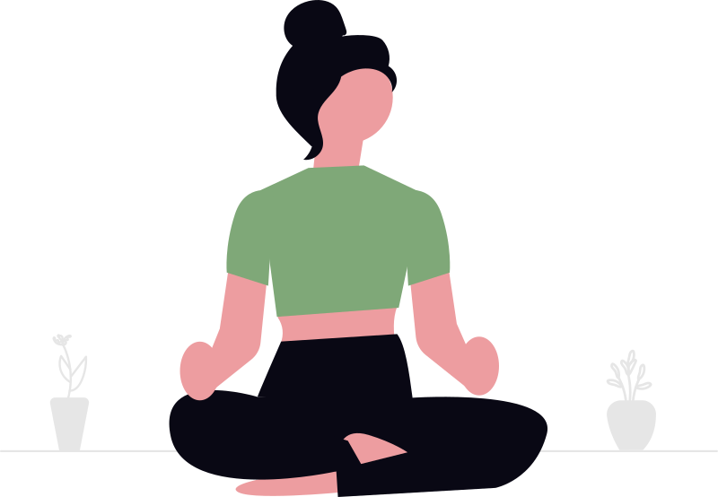
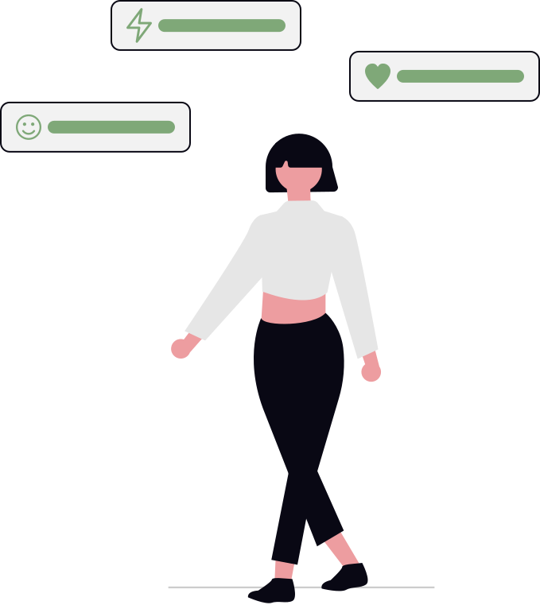

Kami percaya setiap
remaja berhak untuk
didengar.
Tranquillitas lahir dari keprihatinan terhadap tingginya angka masalah kesehatan mental remaja di Indonesia yang kerap tidak terdeteksi dan tidak tertangani. Kami hadir bukan sebagai pengganti profesional, melainkan sebagai langkah pertama — ruang yang aman, hangat, dan bebas stigma.
Nama Tranquillitas berasal dari bahasa Latin yang berarti ketenangan. Sebuah pengingat bahwa damai itu bukan hal yang mustahil — ia hanya butuh dirawat, perlahan.
Mengapa kami ada?
Visi
Mewujudkan generasi muda Indonesia yang sadar, peduli, dan mampu merawat kesehatan mental mereka sendiri — sehingga tidak ada lagi remaja yang merasa sendirian dalam perjuangannya.
"Satu langkah kecil untuk memahami dirimu adalah langkah besar menuju kesembuhan."
Misi
Menyediakan informasi yang akurat, mudah dipahami, dan bebas stigma seputar kesehatan mental remaja. Kami ingin menjadi jembatan antara remaja yang membutuhkan bantuan dengan sumber daya yang tepat.
- ✓ Edukasi berbasis fakta, bukan stigma
- ✓ Konten yang relevan untuk remaja Indonesia
- ✓ Menghubungkan dengan bantuan profesional
Yang kami pegang teguh
Tanpa Stigma
Setiap perasaan valid. Tidak ada yang lemah karena meminta bantuan.
Aman & Nyaman
Ruang yang bebas dari penghakiman, terbuka untuk semua cerita.
Berbasis Fakta
Informasi yang kami sajikan bersumber dari referensi kesehatan terpercaya.
Bersama, kita bisa
memutus siklus ini.
Kesehatan mental bukan hal yang tabu. Semakin banyak remaja yang sadar dan berani bicara, semakin besar harapan kita bersama untuk generasi yang lebih sehat secara mental.